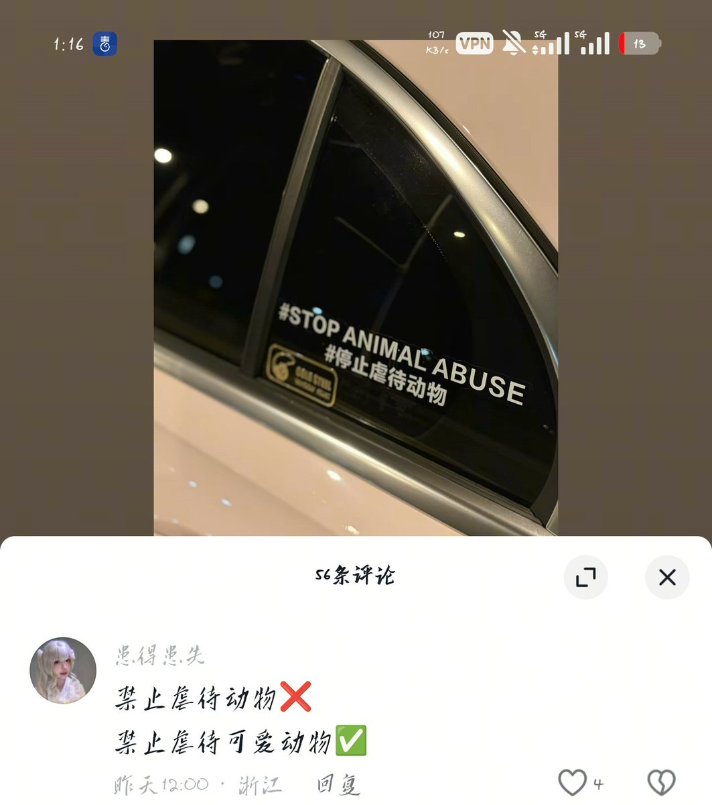

432InfantryRegiment
@432Ifantrygroup
自己虐猫虐狗还要把视频发到网上,其目的根本在于伤害对猫抱有好感的人,在上文数据的支撑下,就是明白无误地是反社会反人类。
*实际上，如果你以特别残忍的手段虐杀一只老鼠，也是被大多数人所不接受的，因此我部分支持今天虐待动物之后就会杀人的逻辑。

432InfantryRegiment
@432Ifantrygroup
停止虐待动物，是作为一位动物保护主义者、我校动物保护协会成员嘴都要说烂了的话题。然而就是这么一项在很多国家被立法禁止的行为，在中国竟然成为了反向政治正确，一批人叫嚣着支持虐待动物，还声称法律只能保护人，如何对待动物是人的自由，只保护可爱动物是虚伪的。那么事实真的如此吗？ https://t.co/UJZjFa4dx2